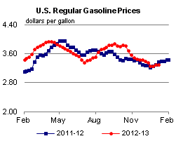

Strong U.S. Crude Oil Production Growth Forecast Through 2014
The strong growth in U.S. crude oil production, primarily attributable to growing volumes of crude oil produced from tight oil formations, has been a major oil market story in recent years. The U.S. Energy Information Administration (EIA) estimates that U.S. total crude oil production averaged 6.4 million barrels per day (bbl/d) in 2012, the highest annual average rate of production since 1997, and an 0.8-million-bbl/d increase from 2011 (Figure 1). This month, EIA is extending the Short-Term Energy Outlook (STEO), forecast period through 2014 for the first time. In this forecast, EIA expects continuing strong growth, with U.S. crude oil production increasing to 7.3 million bbl/d in 2013 and 7.9 million bbl/d in 2014, the highest annual rate of crude oil production since 1988.
{kind=link}
Over the past three years, crude oil production growth in the United States has been driven by increased drilling in tight oil formations in Texas, North Dakota, and a handful of other states. STEO forecasts published throughout 2012 were repeatedly revised higher as new production data indicated improvements in rig efficiencies (the number of wells a rig can drill in a year) and initial production rates (average production per day over the first 30 days of a well's production).
The same drivers of upward revisions to the 2012 forecast are driving expectations of strong production growth through 2014. Central to STEO's crude oil production forecast will be ongoing development activity in key onshore basins. In particular, drilling in tight oil plays in the Williston (which includes the Bakken formation), Western Gulf (which includes the Eagle Ford formation), and Permian basins are expected to account for the bulk of growth through 2014. Williston Basin production is expected to rise from an estimated December 2012 level of 0.8 million bbl/d to 1.2 million bbl/d in December 2014. Western Gulf Basin production rises from an estimated December 2012 level of 1.1 million bbl/d to 1.8 million bbl/d in December 2014. Within the Western Gulf Basin, roughly 0.4 million bbl/d of the oil production is outside of the Eagle Ford formation. The Western Gulf Basin accounts for more than half of the onshore domestic liquids production growth due to a comparatively large amount of liquids coming from both oil and gas wells compared with the other key production basins. The Permian Basin in West Texas, which includes plays such as Spraberry, Bonespring, and Wolfcamp, is a third key growth area. EIA estimates that crude oil production from the Permian Basin reached 1.2 million bbl/d in December 2012. Permian Basin production is projected to increase to 1.4 million bbl/d in December 2014. Although average initial liquids production volumes from Permian wells have risen, the production forecast for this basin has been scaled back due to lower rig efficiency across all wells being drilled in the region.
While onshore crude oil production is expected to account for the bulk of the total production increase through 2014, growth will reflect expected increases in offshore production from the U.S. federal Gulf of Mexico (GOM). EIA is projecting that GOM crude oil production, which is estimated to have averaged 1.26 million bbl/d in 2012, will increase to 1.44 million bbl/d in 2014. The expected increases from GOM are the result of several relatively high-volume deepwater projects that are expected to come onstream, including the Jack-St. Malo joint field development, Big Foot, Tubular Bells, and Lucius. Also expected onstream during 2014 is the Atlantis Phase 2 redevelopment project. Combined peak oil production from the new projects could be in the range of 300,000 to 350,000 bbl/d (although later-2013 scheduled start-ups may not reach peak volumes until 2014).
These continuing increases in crude oil production are having profound effects on U.S. petroleum balances. A large portion of tight oil production consists of light, sweet crude oil. As previously noted by EIA, growing production has led to reduced imports of light, sweet crude oil on the U.S. Gulf Coast, the leading U.S. refining center. Without sufficient pipeline capacity to move all of the growing midcontinent production to the Gulf Coast, prices of these crudes, such as West Texas Intermediate (WTI), have declined compared to coastal grades such as Louisiana Light Sweet (LLS), reflecting the increased cost of moving the crude using marginal modes of transportation such as rail, barge, and truck. The persistent discounts have spurred many infrastructure changes, including the May 2012 reversal of the Seaway Pipeline, which runs between Cushing, Oklahoma and Houston, Texas. The availability of domestic light crude to U.S. Gulf Coast refineries is expected to continue increasing as pipeline expansions allow more crude oil to move to the U.S. Gulf Coast, including an expansion of the Seaway Pipeline expected to be completed later this month. Growing production is also encouraging crude oil movements to the East and West coasts via rail.
Finally, as discussed in a recent TWIP article, the choice of accounting convention for measuring liquids production also affects reported output levels. Domestic field production of crude oil and liquefied petroleum gases, a somewhat broader focus than crude oil alone, totaled 8.5 million bbl/d in 2012, and is forecast to reach 9.5 million bbl/d in 2013 and 10.1 million bbl/d in 2014. Forecast production in 2014 represents the highest level of total field production for all liquids since 1985.
Gasoline price up slightly, diesel fuel price down slightly to start the year
The U.S. average retail price of regular gasoline increased less than a penny to remain at $3.30 per gallon, down eight cents from last year at this time. Prices were up in all coastal regions of the nation and down in interior regions. The largest increase came on the Gulf Coast, where the price is up six cents to $3.17 per gallon. The East Coast price is $3.44 per gallon, an increase of four cents from last week, and the West Coast price is up three cents to $3.49 per gallon. The largest decrease came in the Midwest, where the price dropped eight cents to $3.14 per gallon. Rounding out the regions, the Rocky Mountain price is below $3 per gallon for the first time since February 2011, after decreasing eight cents to $2.94 per gallon.
The national average diesel fuel price decreased a penny to $3.91 per gallon, eight cents higher than last year at this time. The price on the East Coast was unchanged, remaining at $4.01 per gallon for a third consecutive week, and the Gulf Coast price increased a penny to $3.84 per gallon, while prices in all other regions decreased. The Rocky Mountain region saw the largest decrease, falling six cents to $3.69 per gallon. The Midwest price is now $3.87 per gallon, a drop of two cents from last week. Rounding out the regions, the West Coast price decreased less than a penny to remain at $3.99 per gallon.
Propane inventories decline
U.S. propane stocks fell 1.1 million barrels to end at 65.6 million barrels last week, 11.3 million barrels (21 percent) higher than a year ago. Midwest regional inventories dropped by 1.5 million barrels, while East Coast inventories declined by 0.1 million barrels. Rocky Mountain/West Coast stocks dropped by 0.1 million barrels, and the Gulf Coast region gained by 0.7 million barrels. Propylene non-fuel-use inventories represented 5.3 percent of total propane inventories.
Residential heating oil prices increase, propane prices unchanged
Residential heating oil prices increased during the period ending January 7, 2013. The average residential heating oil price increased by a penny to $3.97 per gallon, nearly 4 cents per gallon higher than the same time last year. Wholesale heating oil prices decreased by 2 cents per gallon last week to $3.14 per gallon, almost 2 cents per gallon less than last year at this time.
The average residential propane price rose a fraction of a cent to hold steady at $2.43 per gallon, 43 cents per gallon lower than the same period last year. Wholesale propane prices decreased by 6 cents to $0.92 per gallon for the week ending January 7, 2013, 34 cents per gallon lower than the January 9, 2012 price.
Text from the previous editions of This Week In Petroleum is accessible through a link at the top right-hand corner of this page.
|  | |||||||
| Retail Data | Change From Last | Retail Data | Change From Last | ||||
| 01/07/13 | Week | Year | 01/07/13 | Week | Year | ||
| Gasoline | 3.299 | Heating Oil | 3.973 | ||||
| Diesel Fuel | 3.911 | Propane | 2.433 | ||||
|
|||||||||||||||||||||||||||
| *Note: Crude Oil Price in Dollars per Barrel. | |||||||||||||||||||||||||||
 |
|||||||
| Stocks Data | Change From Last | Stocks Data | Change From Last | ||||
| 01/04/13 | Week | Year | 01/04/13 | Week | Year | ||
| Crude Oil | 361.3 | Distillate | 130.7 | ||||
| Gasoline | 233.1 | Propane | 65.572 | ||||